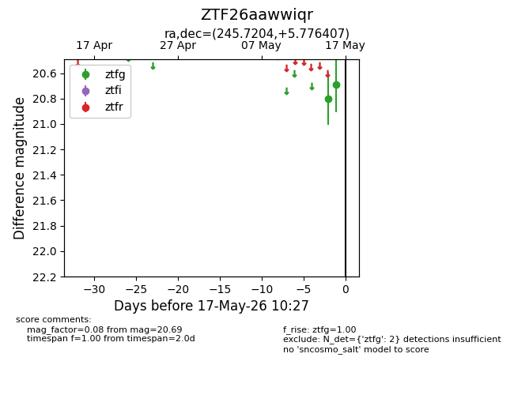
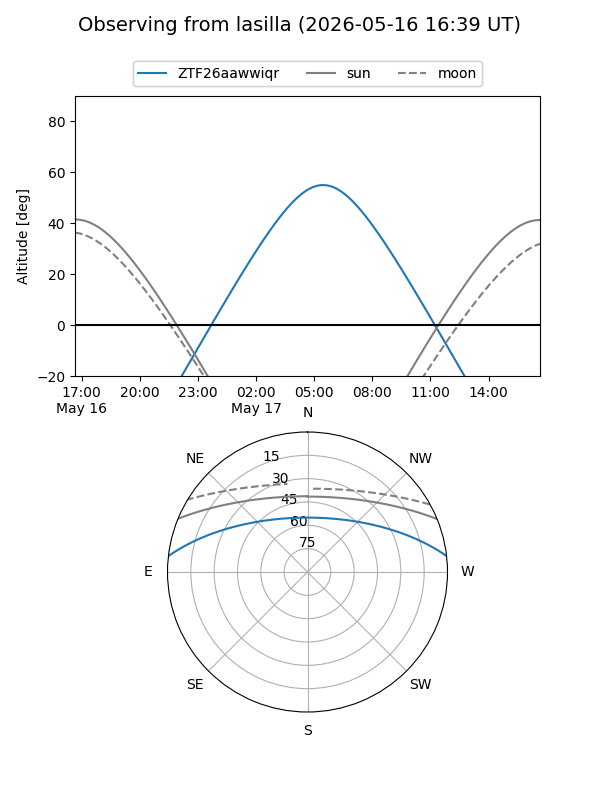
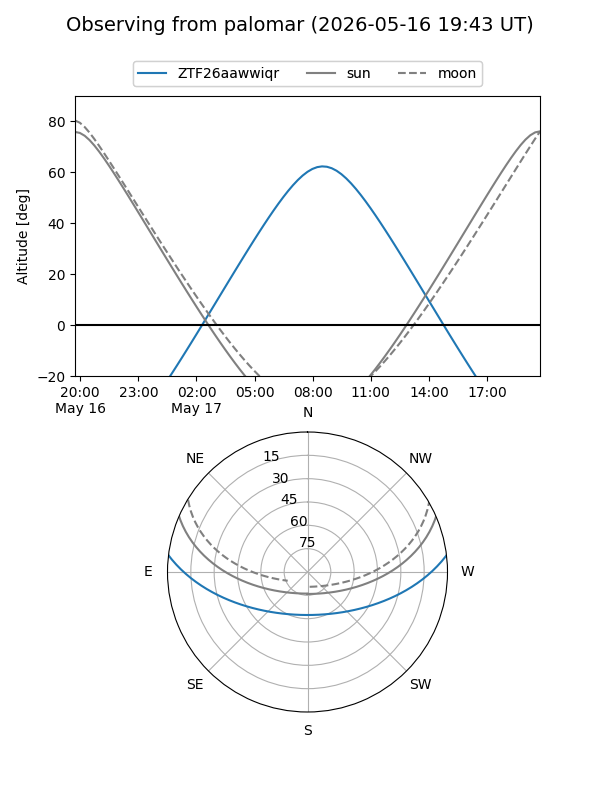

ZTF26aawwiqr
Target ZTF26aawwiqr at 2026-05-17 10:29
Aliases and brokers:
FINK: link
Lasair: link
ALeRCE: link
alt names
ZTF26aawwiqr (ztf,fink_ztf)
Coordinates:
equatorial (ra, dec) = 245.7204,+5.77641
equatorial (HMS+DMS) = 16:22:52.89,+05:46:35.07
galactic (l, b) = (19.8482,+35.48550)
Flags:
Photometry:
last ztfg=20.69
2 ztfg detections
Lightcurve

Visibility


Additional plots